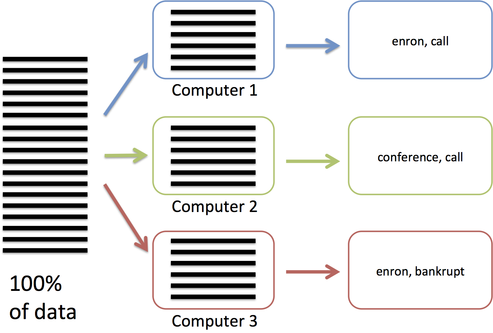
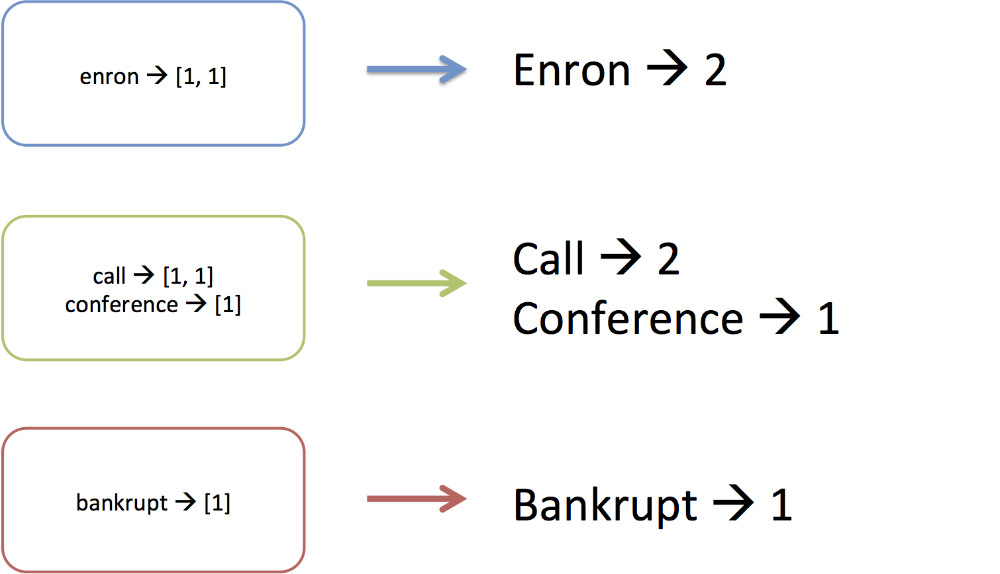

You can save this script to exercise1.py and then run python exercise2.py dataiap/datasets/emails/lay-k.json. It will print the word count in due time. get_terms is similar to the word tokenizer we saw on day 4. words keeps track of the number of times we've seen each word. email = JSONValueProtocol.read(line)[1] uses a JSON decoder to convert each line into a dictionary called email, that we can then tokenize into individual terms.
As we said before, running this process on several petabytes of data is infeasible because a single machine might not have petabytes of storage, and we would want to enlist multiple computers in the counting process to save time.
We need a way to tell the system how to divide the input data amongst
multiple machines, and then combine all of their work into a single
count per term. That's where MapReduce comes in!
Motivating MapReduce
You may have noticed that the code we have been writing for the past
week look awfully similar.
Remember when we processed the campaign donations dataset to create a
histogram? We basically:
- extracted the candidate name and donation amount from each line and
computed the histogram bucket for the amount
- grouped the donations by candidate name and donation amount.
- summarized each (candidate, donation) bucket by counting the number
of donations.
Now consider computing term frequency in the previous class. We:
- cleaned and extracted terms from each email file
- grouped the terms by which folder they were from
- summarized each folder's group by counting the number of times
each term was seen.
This three step pattern of 1) extracting and processing from each
line or file, 2) grouping by some attribute(s), and 3)
**summarizing"" the contents of each group is extremely common in the
vast majority of data processing tasks. We implemented step 2 by
adding elements to a global dictionary (e.g.,
folder_tf[e['folder']].update in day 4's
code). We implemented step 3 by counting or summing the values in
the dictionary.
Using a dictionary like this works because the dictionary fits in
memory. However if we had processed a lot more data, the dictionary
may not fit into memory, and it'll take forever to run. Then what do
we do?
The researchers at google also noticed this problem, and developed a
framework to run these kinds
of patterns on huge amounts of data (MapReduce). When you use this framework, you just need to write
functions to perform each of the three steps, and the framework takes
care of running the whole pattern on one machine or a thousand machines! They use a
different terminology for the three steps:
- Map (from each)
- Shuffle (grouping by)
- Reduce (summarize)
OK, now that you've seen the motivation behind the MapReduce
technique, let's actually try it out.
MapReduce
Say we have a JSON-encoded file with emails (3,000,000 emails on
3,000,000 lines), and we have 3 computers to compute the number of
times each word appears.
In the map phase (figure below), we are going to send each computer
1/3 of the lines. Each computer will process their 1,000,000 lines by
reading each of the lines and extracting the words that make them up.
For example, the first machine may extract "enron, call,...", while
the second machine extracts "conference, call,...".

From the words, we will create (key, value) pairs (or (word, 1) pairs
in this example). The shuffle phase will
assigned each key to one of the 3 computer, and all the values associated with
the same key are sent to the key's computer. This is necessary because the whole
dictionary doesn't fit in the memory of a single computer! Think of
this as creating the (key, value) pairs of a huge dictionary that
spans all of the 3,000,000 emails. Because the whole dictionary
doesn't fit into a single machine, the keys are distributed across our
3 machines. In this example, "enron" is assigned to computer 1, while
"call" and "conference" are assigned to computer 2, and "bankrupt" is
assigned to computer 3.

Finally, once each machine has received the values of the keys it's
responsible for, the reduce phase will process each key's value. It does this by
going through each key that is assigned to the machine and executing
a reducer function on the 1's associated with the key. For example,
"enron' was associated with a list of three 1's, and the reducer step
simply adds them up.

MapReduce is more general-purpose than just serving to count words.
Some people have used it to do exotic things like process millions of
songs,
but we want you to work through an entire end-to-end example.
Without further ado, here's the wordcount example, but written as a
MapReduce application: